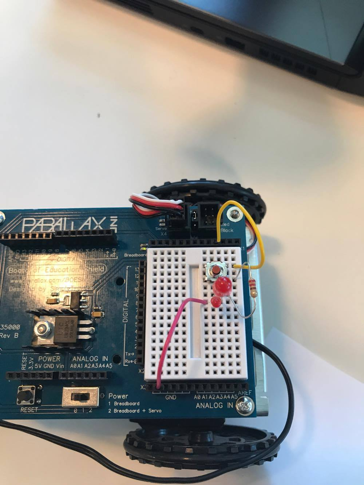
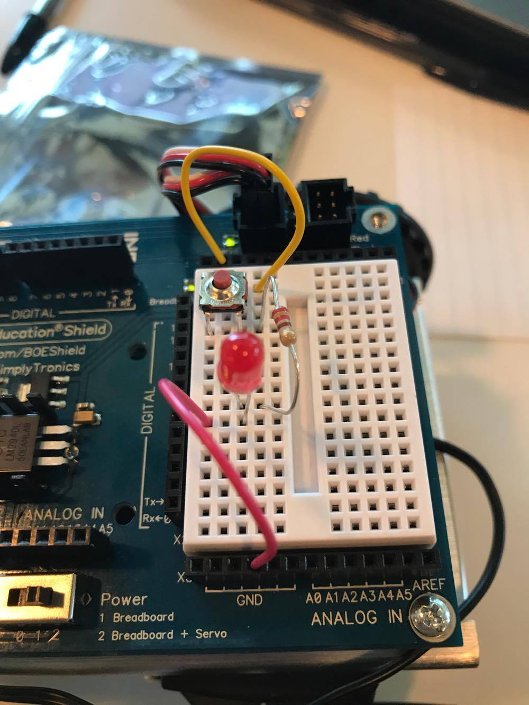
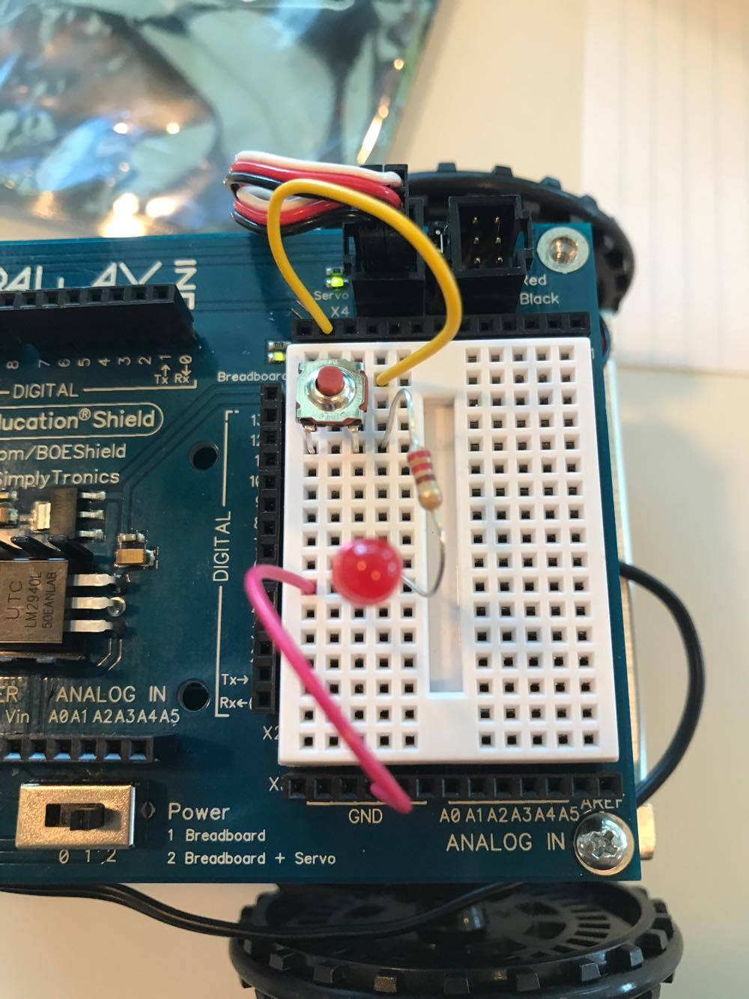
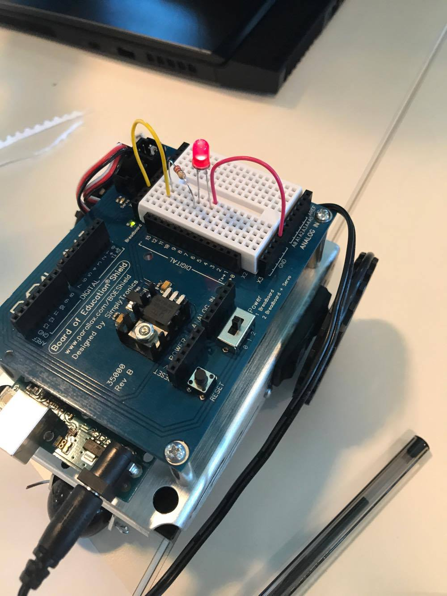
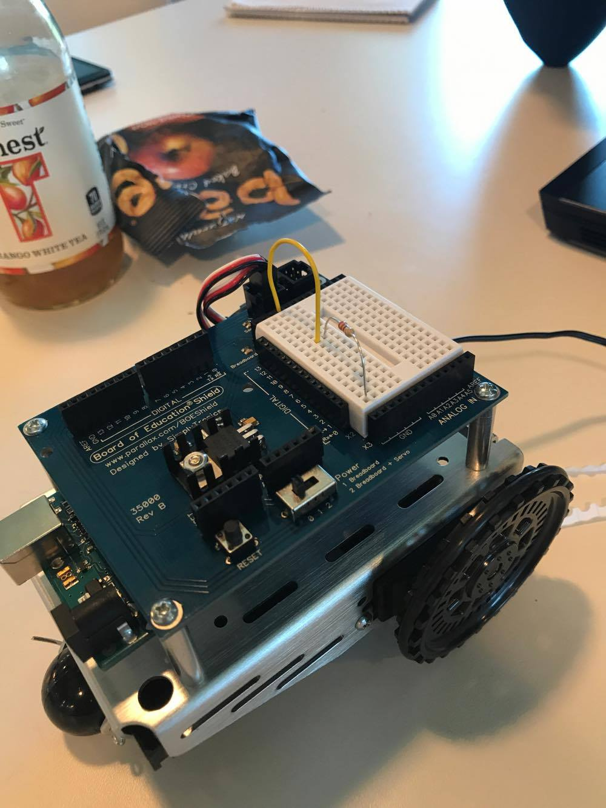
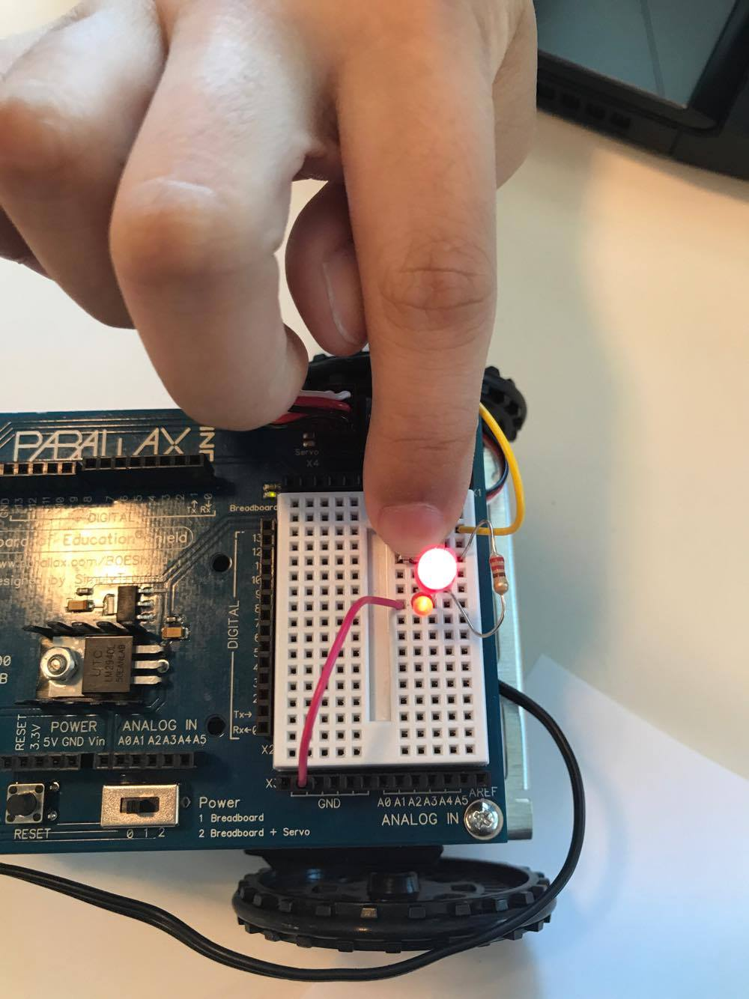
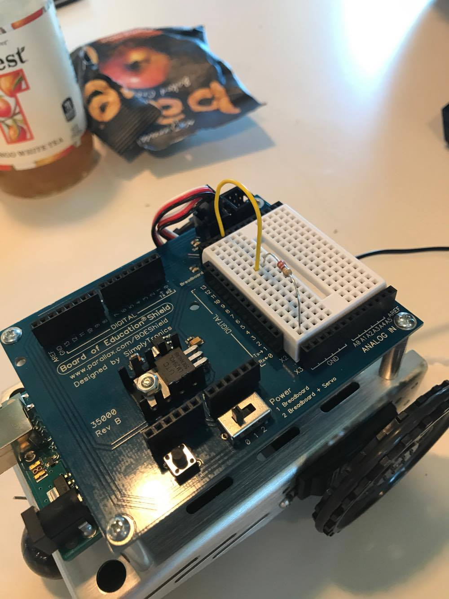

This circuit consists of a breadboard which is powered by the Arduino power source. It is connected to the resistor which helps prevent the too much current flow which can make it burn, therefore a circuit is necessary. It is then connected to a light. Then it is connected to the GRD which ends the circuit.








